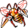

#015
Beedrill
BugPoison
Abilities: Adaptability, Sniper, Poison Touch
Base stats BST 450
HP65
Attack115
Defense40
Speed95
Sp. Atk40
Sp. Def95
Evolution
None detected.
Level-up learnset
LevelMoveType
Lv. 1TwineedleBug
Lv. 1Fury AttackNormal
Lv. 1HardenNormal
Lv. 1String ShotBug
Lv. 1Poison StingPoison
Lv. 1Bug BiteBug
Lv. 10Fury AttackNormal
Lv. 11Fury CutterBug
Lv. 14RageNormal
Lv. 15Toxic SpikesPoison
Lv. 17Pin MissileBug
Lv. 17PursuitDark
Lv. 21Focus EnergyNormal
Lv. 23VenoshockPoison
Lv. 23Poison JabPoison
Lv. 28X-ScissorBug
Lv. 34Drill Peck
Lv. 37AgilityPsychic
Lv. 43OutrageDragon
Lv. 45MegahornBug